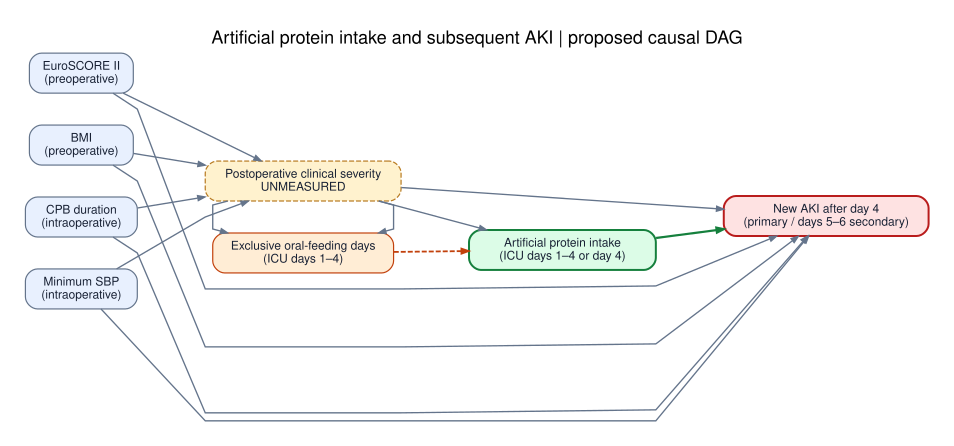

Main analyses
- Two exposures: average days 1–4; day 4
- Two outcomes: primary; secondary AKI
- Two models: crude; adjusted
- Estimate: odds ratio (OR) with 95% CI
Fortgeschrittenes Praxisprojekt · Intermediate Presentation
2026-12-04
Fortgeschrittenes Praxisprojekt · LMU Munich
December 4, 2026
[Team members] · Project partner: Wolfgang Hartl
OUR RESEARCH QUESTION
Is artificial protein intake during ICU days 1–4 associated with new AKI after day 4?
Study design: Post-hoc observational protein analysis; protein was prescribed by clinicians, not randomized. Sources: Project proposal, pp. 1–2; project partner’s answers; Stoppe et al. (2023).
Average intake over ICU days 1–4
Day-4 intake on ICU day 4
Unit: g/kg body weight/day — verify the averaging and denominator in the local data documentation.
Primary — New AKI after ICU day 4, until ICU discharge alive or death.
Secondary — New AKI on ICU days 5–6.
Both outcomes: binary (yes/no).
Outcome windows: Project proposal, p. 2. Artificial protein was a clinician-directed nutritional supplement: project partner’s answers.

Measured adjustment candidates: EuroSCORE II · BMI · CPB duration · minimum intraoperative SBP. Oral feeding (days 1–4) requires special care because it overlaps the protein exposure period. Postoperative clinical severity is not directly measured.
Working causal assumptions, not established causal effects. DAG source: project discussions and accompanying dag_source.R.
| Patient characteristic | n |
|---|---|
| Patients included in the analysis | [N] |
| New AKI after day 4 (primary) | [n] |
| New AKI on days 5–6 (secondary) | [n] |
| Died during ICU stay | [n] |
| Died in ICU without new AKI | [n] |
| Survived ICU without new AKI | [n] |
Some exposure and/or covariate values are missing.
[x / N] patients have missing [variable(s)].
Report model-specific n for comparisons.
Replace placeholders with counts from your restricted analysis population; distinguish the AKI definitions. A documented zero protein intake is not the same as missing intake.
Describe the observed pattern: [concentration / skewness / variation / outliers]. Very low values may reflect supplemental artificial feeding rather than complete nutritional replacement.
Do not interpret the placeholder as data. The project partner confirmed that artificial nutrition could be supplementary.
Candidate covariates
EuroSCORE II, BMI, CPB duration, minimum intraoperative SBP.
Investigate separately: days on exclusive oral feeding.
Report: sample size and protein-unit increment.
logit[P(AKI = 1)] = β₀ + β₁ × artificial protein intake + γᵀ × covariates
Adjusted models describe conditional associations, not randomized treatment effects. Covariate inclusion requires a justified causal and temporal interpretation.
Interpret: effect direction and size · confidence interval width · what changes after adjustment · consistency of average and day-4 exposures.
STRATIFIED FOREST PLOT
[Insert local subgroup model output]
Avoid concluding that groups differ merely because one subgroup is statistically significant and another is not. Small event counts may produce unstable estimates.
Concern: Artificial protein administration is linked to feeding ability and clinical condition.
Analysis: [specify the oral-feeding sensitivity model or restriction].
Result: [direction and magnitude of change].
Concern: Death prevents subsequent observation of AKI.
Worst case: Recode ICU deaths without new AKI as AKI events.
Result: [compare original and recoded estimates].
Worst-case recoding follows the project proposal and partner response. It is not a formal competing-risks analysis; time-to-event methods require suitable event and follow-up timing.
Primary outcome — AKI after day 4
[Summarize adjusted estimate, direction, magnitude, uncertainty, and whether average/day-4 measures agree.]
Secondary outcome — AKI on days 5–6
[Explain whether the shorter outcome window supports or contrasts with the primary finding.]
Role of oral feeding and sensitivity analyses
[Explain whether accounting for oral feeding or reclassifying deaths changes the interpretation.]
Answer: [One cautious sentence about the association, not a proven causal effect.]
How should we handle patients who die without developing AKI? Is worst-case recoding sufficient as a sensitivity analysis?
Does exclusive oral feeding primarily indicate nutrition strategy, clinical recovery, or both? Should we adjust for it?
We cannot directly observe postoperative clinical severity. Are our clinical covariates adequate proxies, or could important confounding remain?
Questions for peers and supervisors: Are our causal assumptions, adjusted model and sensitivity analyses defensible?
LMU Munich · Statistics and Data Science